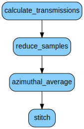

\(\renewcommand\AA{\unicode{x212B}}\)
SANSILLMultiProcess v1¶
{kind=link}
SANSILLMultiProcess dialog.¶
Summary¶
Performs SANS data reduction of the entire experiment.
See Also¶
Properties¶
Name |
Direction |
Type |
Default |
Description |
|---|---|---|---|---|
SampleRunsD1 |
Input |
list of str lists |
Sample run(s) at the distance #1. Allowed values: [‘nxs’] |
|
SampleRunsD2 |
Input |
list of str lists |
Sample run(s) at the distance #2. Allowed values: [‘nxs’] |
|
SampleRunsD3 |
Input |
list of str lists |
Sample run(s) at the distance #3. Allowed values: [‘nxs’] |
|
SampleRunsD4 |
Input |
list of str lists |
Sample run(s) at the distance #4. Allowed values: [‘nxs’] |
|
SampleRunsD5 |
Input |
list of str lists |
Sample run(s) at the distance #5. Allowed values: [‘nxs’] |
|
DarkCurrentRuns |
Input |
list of str lists |
Absorber (Cd/B4C) run(s). Allowed values: [‘nxs’] |
|
EmptyBeamRuns |
Input |
list of str lists |
Empty beam run(s). Allowed values: [‘nxs’] |
|
FluxRuns |
Input |
list of str lists |
Empty beam run(s) for flux calculation only; if left blank the flux will be calculated from EmptyBeamRuns. Allowed values: [‘nxs’] |
|
EmptyContainerRuns |
Input |
list of str lists |
Empty container run(s). Allowed values: [‘nxs’] |
|
SampleTrRunsW1 |
Input |
list of str lists |
Sample transmission run(s) at the wavelength #1. Allowed values: [‘nxs’] |
|
SampleTrRunsW2 |
Input |
list of str lists |
Sample transmission run(s) at the wavelength #2. Allowed values: [‘nxs’] |
|
TrDarkCurrentRuns |
Input |
list of str lists |
Absorber (Cd/B4C) run(s) for transmission calculation. Allowed values: [‘nxs’] |
|
ContainerTrRuns |
Input |
list of str lists |
Container transmission run(s). Allowed values: [‘nxs’] |
|
TrEmptyBeamRuns |
Input |
list of str lists |
Empty beam run(s) for transmission calculation. Allowed values: [‘nxs’] |
|
SensitivityMap |
Input |
string |
File or workspace containing the map of the relative detector efficiencies. |
|
DefaultMask |
Input |
string |
File or workspace containing the default mask (detector edges and dead pixels/tubes) to be applied to all the detector configurations. |
|
BeamStopMasks |
Input |
string |
File(s) or workspace(s) containing the detector mask per distance configuration (typically beam stop). |
|
FlatFields |
Input |
string |
File(s) or workspaces containing the reduced water data (in 2D) for absolute normalisation. |
|
Solvents |
Input |
string |
File(s) or workspace(s) containing the reduced solvent/buffer data (in 2D) for solvent subtraction. |
|
TransmissionThetaDependent |
Input |
boolean |
True |
Whether or not to apply the transmission correction in 2theta-dependent way. |
NormaliseBy |
Input |
string |
Monitor |
Allowed values: [‘None’, ‘Time’, ‘Monitor’] |
TrBeamRadius |
Input |
dbl list |
0.1 |
Beam radius [m] used for transmission and flux calculations. |
BeamRadius |
Input |
dbl list |
0.25 |
Beam radius [m] used for beam center search. |
SampleThickness |
Input |
dbl list |
0.1 |
Sample thickness [cm] used in final normalisation. |
SampleThicknessFrom |
Input |
string |
User |
Define where to read the sample thicknesses from. Allowed values: [‘User’, ‘Nexus’] |
SampleNames |
Input |
str list |
Sample names to put in the axis of the output workspaces. |
|
SampleNamesFrom |
Input |
string |
RunNumber |
Define where to read the sample names from. Allowed values: [‘User’, ‘Nexus’, ‘RunNumber’] |
WaterCrossSection |
Input |
number |
1 |
Provide the water cross-section; used only if the absolute scale is done by dividing to water. |
ProduceSensitivity |
Input |
boolean |
False |
Whether or not to produce a sensitivity map; should be used for water reduction only. |
SensitivityWithOffsets |
Input |
boolean |
False |
Whether the sensitivity data has been measured with different horizontal offsets (D22 only). |
MinThreshold |
Input |
number |
0 |
Minimum threshold for calculated sensitivity. |
MaxThreshold |
Input |
number |
2 |
Maximum threshold for calculated sensitivity. |
DistancesAtWavelength2 |
Input |
long list |
Defines which distance indices (starting from 0) match to the 2nd wavelength |
|
OutputBinning |
Input |
string |
Output binning for each distance( : separated list of binning params). |
|
OutputType |
Input |
string |
I(Q) |
Final integration type; at the moment only I(Q) is supported. Allowed values: [‘I(Q)’] |
CalculateResolution |
Input |
string |
None |
Choose to calculate the Q resolution. Allowed values: [‘MildnerCarpenter’, ‘DirectBeam’, ‘None’] |
DefaultQBinning |
Input |
string |
PixelSizeBased |
Choose how to calculate the default Q binning. Allowed values: [‘PixelSizeBased’, ‘ResolutionBased’] |
BinningFactor |
Input |
number |
1 |
Specify a multiplicative factor for default Q binning (pixel or resolution based). |
NumberOfWedges |
Input |
number |
0 |
Number of wedges to integrate separately. |
WedgeAngle |
Input |
number |
30 |
Wedge opening angle [degrees]. |
WedgeOffset |
Input |
number |
0 |
Wedge offset angle from x+ axis. |
AsymmetricWedges |
Input |
boolean |
False |
Whether to have asymmetric wedges. |
WavelengthRange |
Input |
dbl list |
1,10 |
Wavelength range [Angstrom] to be used in integration (TOF only). |
ShapeTable |
Input |
The name of the table workspace containing drawn shapes on which to integrate. If provided, NumberOfWedges, WedgeOffset and WedgeAngle arguments are ignored. |
||
OutputPanels |
Input |
boolean |
False |
Output I(Q) per detector bank. |
PerformStitching |
Input |
boolean |
True |
Wheter or not to perform stitching. |
ManualScaleFactors |
Input |
dbl list |
Manually specified scale factors, must follow the same order of the workspaces in the list. |
|
TieScaleFactors |
Input |
boolean |
False |
Whether or not to calculate a single scale factor per workspace for all the spectra. |
ScaleFactorCalculation |
Input |
string |
MedianOfRatios |
Allowed values: [‘MedianOfRatios’, ‘Manual’] |
StitchReferenceIndex |
Input |
number |
1 |
The index of the reference workspace during stitching, by default the middle distance will be chosen as reference if there are 3. |
OutputWorkspace |
Output |
WorkspaceGroup |
Mandatory |
The output workspace group containing the reduced data. |
Description¶
This algorithms performs complete treatment of SANS data recorded with the ILL instruments. This high level algorithm steers the reduction for multiple samples measured with one or more detector distances in the most optimal way. The sample measurements will be corrected for all the instrumental effects and converted to Q-space, producing by default the azimuthal average curve \(I(Q)\). Optionally, it can also perform anisotropic integration with azimuthal wedges or hand-drawn sectors in the instrument viewer. If requested, it can also produce separate \(I(Q)\) curves per detector panel. Note, that panels and azimuthal wedges cannot be requested simultaneously. The algorithm supports monochromatic (standard, kinetic, and event) as well as TOF modes (linear or variable binning, D33 only). Makes use of SANSILLReduction and SANSILLIntegration and the algorithm suite used therein.
Output¶
The algorithm will generate a workspace group with the name as provided in the mandatory parameter OutputWorkspace. The group will contain many workspaces as follows:
The corrected real-space workspaces (2D), one per detector distance
The integrated I(Q) workspace, one per detector distance
Optionally, the I(Q) workspaces per azimuthal sector or per detector panel, if requested
The stitched I(Q) workspace (also for wedges, if requested)
The calculated scale factors for stitching
The transmission workspaces, one per wavelength
Notes¶
The algorithm will cache the reduced calibration measurements (empty beams, dark currents, empty containers, etc.) in the ADS. This is to ensure that subsequent runs with the same calibrants run faster. However, if a critical parameter is changed, such as the normalisation option, those workspaces must be manually cleared before processing again.
The sample runs for different distances must be filled in order; that is, if there is only one distance is present, they must be filled in D1, if only 2, then D1 and D2, and so on.
The transmission runs for different wavelengths must be filled in order; that is, if there is only one wavelength, they must be filled in W1, if 2, then W1 and W2.
See the section in SANSILLReduction regarding the blank samples and transmission replicae.
Workflow¶
Below is the high level flowchart of the algorithm. It calculates transmissions (up to 2 wavelengths), then proceeds to the reduction of sample runs (up to 5 distances). At each distance, it will load all the samples, concatenate them and then pass through the reduction steps up to azimuthal averaging. Finally, the I(Q) curves obtained per distance, will be stitched.
Categories: AlgorithmIndex | ILL\SANS | ILL\Auto
Source¶
Python: SANSILLMultiProcess.py